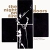

NEW YORK 1970 (CD)
Stentor Sten 91.001, West Germany 1991 |
| 1.Roadhouse Blues/ 2.Break On Through/
3.Ship Of Fools/ 4.Crawling King Snake/ 5.Build
Me A Woman/ 6.Peace Frog/ 7.The End/ 8.The
Celebration Of The Lizard |
| Sources: Felt Forum, New York, January
17th and 18th, 1970, late shows. Not complete. |
| Soundquality: |
 |
|
|
|
|
|
| Rarity Of Material: |
|
|
|
|
|
| Visual Attractiveness: |
|
|
|
|
|
This is the CD-version of the famous US Double-LP-album Roadhouse
Blues, fairly good soundquality. I wish the
bootleggers would have copied the sound from the European
LP album Bring Out Your Dead instead from the US
copy. Anyway, if you don't have this blend of two Felt
Forum concerts from January 17th and 18th, 1970, on
vinyl, this CD is the right choice for you, because it is
quite cheap on record fairs.
NEW YORK BLUES (CD)
Document Records DR 033, Germany/Luxembourg 1989 |
| 1.Roadhouse Blues/ 2.Peace Frog/ 3.Alabama
Song-Back Door Man-Five To One/ 4.The Celebration
Of The Lizard/ 5.Soul Kitchen/ 6.Build Me A
Woman/ 7.When The Music's Over |
| Sources: Felt Forum, New York, January
17th and 18th, 1970, late shows. Tracks 1-5 and
7=late show January 18th; track 6=late show
January 17th. Cover says the tracks were recorded
January 17th, which is just true for track 6. |
| Soundquality: |
|
|
|
|
|
|
| Rarity Of Material: |
|
|
|
|
|
| Visual Attractiveness: |
|
|
|
|
|
A fascinating live CD, almost as good as the official
live albums. All tracks are presented in fine quality and
you listen to exciting versions of a Doors fan's
favourite songs. Document Records used a good quality
tape for the CD and fans will thank them for the unusual
cover, which shows a bearded Morrison, but he did
not have beard at the Felt Forum shows. The picture - by
the way - was taken during The Doors' Isle Of Wight
performance. New York Blues has not the same
tracks as Build Me A Woman (Great Dane Records GDR
8908) or New York 1970 (Stentor Sten 91.001).
Somehow somebody put several songs from three shows
together and distributed the tape, so usually all Felt
Forum CDs are a big mess of songs from three different
concerts.
THE NIGHT ON FIRE (CD)
Tangie Town Records TTR CD 9001, Czech 1996 |
| 1.Break On Through/ 2.Alabama Song-Back
Door Man/ 3.When The Music's Over/ 4.Texas Radio
& The Big Beat (cover says The Wasp)/ 5.Hello
I Love You/ 6.Light My Fire/ 7.The Unknown
Soldier/ 8.Doors interview |
| Sources: 1-7=Kongresshalle, Frankfurt,
Germany, September 14, 1968, complete first show;
track 8 was taped at the Pierce College, Oswego,
New York, USA, September 15, 1967 (complete
recording) with all four Doors. |
| Soundquality: |
|
|
|
|
|
 |
| Rarity Of Material: |
to |
|
|
|
|
| Visual Attractiveness |
|
|
|
|
|
Still, after all those years, the Frankfurt concert is an
uninspired standard concert of a band that was at the
peak of their career. With a best-selling single, Hello
I Love You, and a best-selling album, Waiting For
The Sun, in the background The Doors began their
European tour doing four celebrated concerts in London
together with the psychedelic sounds of Jefferson
Airplane. In Frankfurt, the next stop, it was all
different. There were people attending their two concerts
who didn't speak English at all or didn't get what The
Doors were doing. There were yelling GIs from the
surrounding military stations and patiently listening
other Americans. It was hard for the band to get in
contact with the audience, especially after the driving
boogie of their support band, Canned Heat. The Doors were
too different. Jim wasn't feeling well because he had
drunk too much Goldener Oktober (a cheap German
wine) in the afternoon of the same day. So - that's it.
The people left and never came back. They missed the
second show which is said to have been much better (read
more about the Frankfurt shows and The Doors in Germany
in DQ 36). The Night On Fire was a widely
distributed German vinyl bootleg in the early 80's (now
this album reaches prices at about DM 200). This CD was
made from a low-genera- tion tape with no cuts (no
crackles and no surface noise can be heard, so I guess it
was not taken from a vinyl copy). The sound is better
than on the vinyl.
A surprise is the CD's bonus track - an interview
conducted by two local DJs from Oswego, New York, Steve
Flesser and Mike Lezard. The interview was held before
The Doors went on-stage at the Pierce College, September
15, 1967. Steve and Mike are struggling hard to get their
standard questions answered. After The Doors (especially
Jim and Ray) noticed that the interviewers were not
interested in the band's music and their message but in
how many copies of the singles and the album were sold,
how much money the group gets for a single, how was
touring and stuff, they started making fools of both DJs.
Here are some examples: "Is there something you
can say to all your listeners - what could it be?"
"Fuck," is the answer. Jim says:
"I'm Steve Flesser, and I'm listening to the Jim
Morrison-show". "My name is Jim of the
Doors, when I'm in town you'll always listen to the Mike
Lizard-show." Ray: "I listen to the
Steve Blesser-show, whenever I'm in town - which is
rarely!" and "Steve Flesser is what's
happening. Mike Lezard is also happening."
The CD cover and booklet has got a nice design inspired
by the old vinyl cover using the same pictures and golden
letters. The CD itself is gold plated and has got a
picture of Jim's bust on it.
Recommended!
THE NIGHT ON FIRE (CD)
Living Legend Records LLR-CD 015, Italy 1988 |
| 1.When the music's over/ 2.Alabama
Song-Back Door Man-Five to one/ 3.Moonlight
Drive-Horse Latitudes/ 4.The End |
| Sources: Hollywood Bowl, Los Angeles,
July 5th, 1968, from the official video Live At
The Hollywood Bowl. Not the complete concert. |
| Soundquality: |
|
|
|
|
|
|
| Rarity Of Material: |
|
|
|
|
|
| Visual Attractiveness: |
|
|
|
|
|
Elektra Records made a big mistake with the release of
their Live At The Hollywood Bowl CD in 1987: On
this there were just 6 songs from the simultaneously
published video. Of course the bootleggers took their
chance to produce CDs with the extra tracks. The Night
On Fire CD is in absolute Hifi stereo soundquality
and shouldn't be mixed up with the rare vinyl LP bearing
the same name - on that one was The Doors Frankfurt
concert. For people who haven't got the video (or a hifi
stereo video player) or the official EP I really
recommend this CD. It was made in West Germany, but the
copyright problems got cleared in Italy.
NO FUTURE (CD)
Teddy Bear Records TB 24, Italy 1994 |
| 1.Roadhouse Blues/ 2.Peace Frog/ 3.Alabama
Song-Back Door Man-Five To One/ 4.The Celebration
Of The Lizard/ 5.Soul Kitchen/ 6.Light My Fire/
7.Build Me A Woman/ 8.When The Music's Over. |
| Sources: 1-6=Felt Forum, New York,
January 18th, 1970, late show. Track 7 from
January 17th, 1970 at the Felt Forum, late show;
8=Felt Forum, New York, January 18th, early show.
Same tracks as Westbury Music Fair (Octopus/Why
Not? Octo 003). |
| Soundquality: |
|
|
|
|
|
|
| Rarity Of Material: |
|
|
|
|
|
| Visual Attractiveness: |
|
|
|
|
|
At least they put the date and the place of performance
right: January 18th, 1970 at the Felt Forum
(except Build Me A Woman which was recorded a day
earlier). Out goes the message: if you don't own New
York Blues (Document Records DR 033) and Orange
County Suite (Document Records DR 019) and if you
want to listen to this concert, No Future would be
the right choice, and the quality is pretty much better,
too.
NO LIMITS (CD)
I Miti Del Rock/ Fabbri Editori MRL 003, Italy
1993 |
| 1.When The Music's Over/ 2.Break On
Through/ 3.Five To One/ 4.Back Door Man/
5.Summertime (cover says No Limits No Law)/
6.Mystery Train (cover says Train Coming Round
The Bend, not complete)/ 7.The End |
| Sources: 1=Hollywood Bowl, Los
Angeles, July 5th, 1968, from official video Live
At The Hollywood Bowl; 2-4=Center Coliseum,
Seattle, June 5th, 1970; 5=Matrix Club, San
Francisco, March 10th, 1967; 6+7=Center Coliseum,
Seattle, June 5th, 1970. |
| Soundquality: |
to |
| Rarity Of Material: |
|
| Visual Attractiveness: |
|
Intentionally falsified titles, fade-ins and -outs and
very common material are signatures of a bad CD. At least
they got the dates right! The cover says Non in
Vendita (Not for sale) - let's hope nobody bought it!
NO LIMITS, NO LAWS (CD)
Aulica A141, Italy 1993 |
| 1.I'm A King Bee/ 2.Summertime (cover says
Instrumental)/ 3.Summer's Almost Gone/ 4.Money/
5.Who Do You Love/ 6.Moonlight Drive/ 7.Gloria |
| Sources: All songs recorded at the
Matrix Club, San Francisco, March 10th, 67;
copied from the double CD The Matrix Tapes (The
Swingin' Pig, TSP-CD-047-2). A copy of the
36-minute long Aulica CD (A 141/S) with the same
name but with a different cover. |
| Soundquality: |
|
| Rarity Of Material: |
|
| Visual Attractiveness: |
|
Is there really anybody out there who bought this CD
that was copied from a scratched vinyl LP and which is
absolutely too short for a CD? Well, I did buy it, and I
regret it. So please: Keep your hands off this one!
|